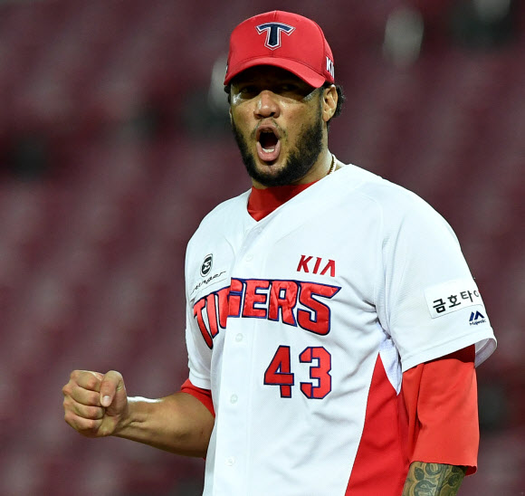
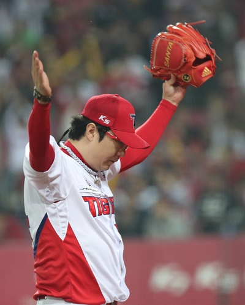

선발진 투수
불펜진 투수
선발진 투수
헥터 피칭 결과

기아 타이거즈의 1선발 투수 헥터 노에시. 도미니카 공화국 출신 선수이다.
| ERA |
1.99 |
| WINNING |
22 |
| LOSING |
06 |
양현종 피칭 결과

기아 타이거즈 토종선발. 현재 리그 전체 통틀어 가장 튀어난 실력을 가지고 있다. 용병들에게도 절대
꿀리지 않는 실력. 별명이 햄종이이다. 너무 귀엽다. 깜찍하다. 심지어 인성도 굿이다. 실력도 좋아 인성도
좋아 얼굴도 귀여워 모자른 게 뭘까? 양햄종은 영원한 기아 투수다. 종신 기아!
| ERA |
1.67 |
| WINNING |
22 |
| LOSING |
06 |
불펜진 투수
임창용
기아의 유일한 마무리 투수이자 최고참 선수.